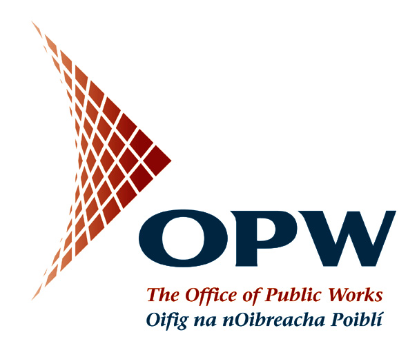
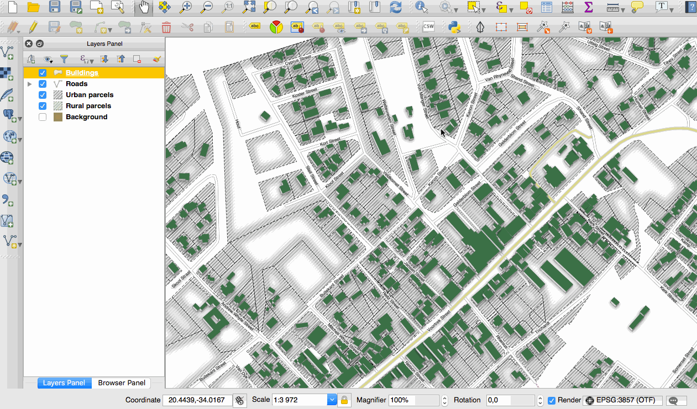
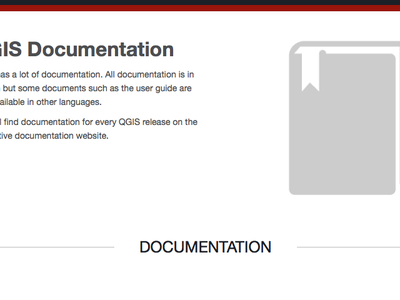
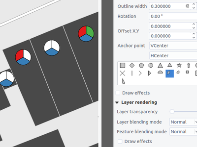
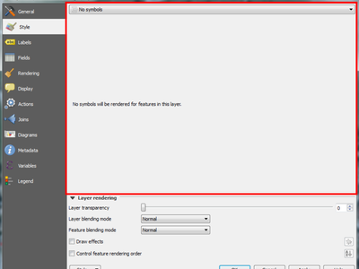
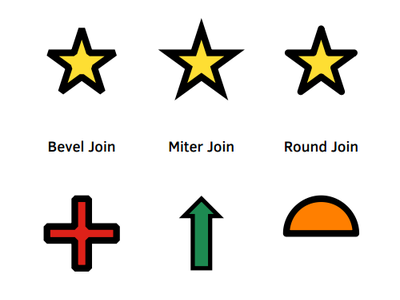
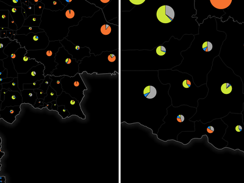
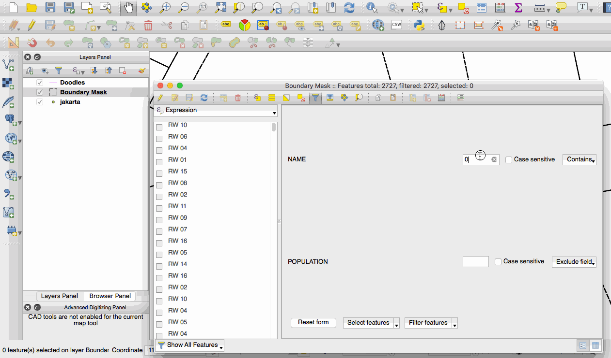
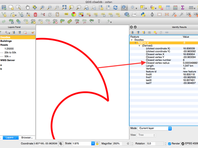

Jurnalul schimbărilor pentru QGIS 2.16¶

Acesta este jurnalul următoarei versiuni de QGIS - versiunea 2.16.0 «Nødebo». Departamentul de Geoștiințe și Colegiul de Management al Resurselor Naturale Forestiere și Peisagistice din Nødebo a găzduit Prima Conferință QGIS Internațională și reuniunea dezvoltatorilor din Mai 2015.
Aceasta nu este o Versiune cu Suport pe Termen Lung
Această versiune nu este desemnată ca având Suport pe Termen Lung (LTR). Utilizatorii care doresc să aibă o versiune de QGIS invariabilă, și care beneficiază de remedierea erorilor timp de cel puțin 1 an, sunt invitați să utilizeze actuala versiune LTR 2.14 (care a devenit versiunea LTR oficială, în urma lansării QGIS 2.16).
Noi Funcționalități în QGIS 2.16 «Nødebo»
Dacă, până acum, ați utilizat QGIS 2.14, veți descoperi un număr mare de caracteristici noi. Vă încurajăm să citiți jurnalele schimbărilor pentru versiunile anterioare deoarece QGIS 2.16 include, de asemenea, toate funcționalitățile din acele versiuni.
Ori de câte ori se adaugă noi caracteristici în aplicație, apare posibilitatea unor noi erori - dacă întâmpinați probleme cu această versiune, vă rugăm să le semnalați la QGIS Bug Tracker.
Cum se pronunță Nødebo…
Mulțumiri
We would like to thank the developers, documenters, testers and all the many folks out there who volunteer their time and effort (or fund people to do so). From the QGIS community we hope you enjoy this release! If you wish to donate time, money or otherwise get involved in making QGIS more awesome, please wander along to qgis.org and lend a hand!
QGIS is supported by donors and sponsors. A current list of donors who have made financial contributions large and small to the project can be seen on our donors list. If you would like to become an official project sponsor, please visit our sponsorship page for details. Sponsoring QGIS helps us to fund our six monthly developer meetings, maintain project infrastructure and fund bug fixing efforts. A complete list of current sponsors is provided below - our very great thank you to all of our sponsors!
QGIS este un soft gratuit iar dvs. nu aveți obligația de a plăti pentru folosirea lui - de fapt, vrem să încurajăm oamenii de pretutindeni să-l folosească, indiferent de starea financiară sau socială - având convingerea că, prin punerea la dispoziția utilizatorilor a posibilităților de decizie spațială, vom ajunge la o societate mai potrivită întregii omeniri. Dacă aveți posibilitatea de a sprijini QGIS, puteți 
- Sponsorii versiunii QGIS 2.16.0
- Generalități
- Caracteristică: Copierea entităților în format GeoJSON
- Caracteristică: Stocarea marcajelor spațiale în fișierul proiectului
- Caracteristică: Suport pentru mesaje GNSS GNRMC
- Caracteristică: Lipirea entităților GeoJSON direct în QGIS
- Caracteristică: Îmbunătățiri aduse indiciilor pentru hărți
- Caracteristică: Pictograme MIME pentru tipurile de fișiere QGIS
- Interfața cu Utilizatorul
- Caracteristică: Instrument de mărire a canevasului hărții
- Caracteristică: Îmbunătățiri aduse transfocării
- Caracteristică: S-a reproiectat editorul interactiv de gradienți
- Caracteristică: Alegerea unei vizualizări implicite pentru dialogul atributelor
- Caracteristică: Îmbunătățiri aduse ferestrei calendarului
- Caracteristică: Selector de culoare îmbunătățit
- Caracteristică: Copierea conținutului celulelor din tabelele de atribute
- Caracteristică: Suport HiDPI îmbunătățit
- Caracteristică: Comportament îmbunătățit al instrumentului de selecție
- Actualizarea Documentației
- Simbologia
- Caracteristică: Strat simbol de tip săgeată
- Caracteristică: Un nou tip de strat simbol de tip „Figură umplută”
- Caracteristică: Noi simboluri de accesibilitate
- Caracteristică: Noi însemne grafice simple pentru simboluri
- Caracteristică: Render „Fără simbol”
- Caracteristică: Mai mult control asupra randării punctul de umplere a centroidului
- Caracteristică: Setarea unui contur pentru simbolurile care conțin caractere ale unor fonturi
- Caracteristică: Control asupra stilului de îmbinare pentru însemnele grafice simple, eliptice sau de tip font
- Caracteristică: un nou instrument pentru hărți, dedicat setării interactive a punctului de decalare al simbolurilor.
- Caracteristică: Un nou panou pentru stil
- Etichetarea
- Diagrame
- Randare
- Digitizarea
- Gestiunea Datelor
- Caracteristică: Noi opțiuni de configurare pentru tabelul de atribute
- Caracteristică: Coloane multiple în formularele cu atribute
- Caracteristică: Control asupra atributelor de exportat, atunci când are loc salvarea unui strat vectorial
- Caracteristică: La vizualizarea formularelor: coloana laterală este, de acum, sortabilă
- Caracteristică: Controlul grafic pentru referințele relațiilor: comenzi rapide pentru adăugarea noilor valori
- Caracteristică: Îmbunătățiri aduse exportului DXF
- Caracteristică: Controale grafice la nivel de vârf în modul de proiectare drag and drop
- Caracteristică: Selectare și filtrare pe bază de formular
- Caracteristică: Crearea straturilor GeoPackage
- Caracteristică: Constrângeri asupra controalelor de editare
- Caracteristică: Modificarea simultană a atributelor pentru entitățile multiple
- Legenda stratului
- Compozitorul de Hărți
- Caracteristică: Noi instrumente pentru desenarea poligoanelor și a poliliniilor
- Caracteristică: Link-uri relative în etichetele compozitorului
- Caracteristică: Includerea entităților atlasului în sursa compozitorului HTML ca GeoJSON
- Caracteristică: Suport svg parametrizat pentru imaginile svg din compozitor
- Caracteristică: Ușurință în utilizarea etichetelor HTML
- Caracteristică: Ieșiri georeferențiate (de exemplu, PDF) din compozitor
- Caracteristică: Hărțile din compozitor se auto-actualizează pe baza unor presetări
- Instrumentele de Analiză
- Caracteristică: Parametri denumiți în expresii
- Caracteristică: Mai multe unități de distanță
- Caracteristică: Modificări aduse expresiilor
- Caracteristică: Statistici pentru câmpuri de tipul text sau dată
- Caracteristică: Afișarea razei de curbură cu ajutorul instrumentul info
- Caracteristică: Suport pentru agregare, în cadrul expresiilor
- Caracteristică: Pluginul fTools a fost înlocuit de algoritmi Processing
- Processing
- Caracteristică: Setarea locațiilor pentru puncte printr-un clic pe canevas
- Caracteristică: Suport pentru expresii și variabile
- Caracteristică: Algoritmi preconfigurați
- Caracteristică: Crearea, din bara de instrumente, a unui plugin, cu ajutorul algoritmilor bazați pe script-uri
- Caracteristică: Utilizarea managerului de autentificare din algoritmii PostGIS
- Caracteristică: Suport pentru scrierea în tabelele fără geometrie
- Caracteristică: Algoritmi GRASS suplimentari în cadrul de procesare
- Furnizorii de Date
- Caracteristică: Seturile de date OGR sunt deschise, în mod implicit, în modul doar-citire
- Caracteristică: Gestiune îmbunătățită a câmpurilor de tip DOMENIU din Postgres
- Caracteristică: Modul readOnly al straturilor vectoriale este configurabil în cadrul proiectului
- Caracteristică: Suport pentru bazele de date DB2
- Caracteristică: În managerul bazei de date, este posibilă actualizarea vederilor Postgres materializate
- Caracteristică: Este afișat atributul FID OGR
- Caracteristică: Servicii REST ArcGIS Map și Feature
- Caracteristică: Salvarea stilurilor în bazele de date MS SQL și Oracle
- Caracteristică: Redenumirea câmpurilor din straturi
- Caracteristică: Suport de bază pentru Oracle Workspace Manager
- Caracteristică: Îmbunătățiri masive aduse Furnizorului WFS
- Caracteristică: Generarea „în timp real” a valorilor implicite pentru straturile Postgres
- Serverul QGIS
- Plugin-urile
- Programabilitatea
- Corecții Importante
Sponsorii versiunii QGIS 2.16.0¶
De asemenea, primim anual sprijin de la diverse organizații, care apreciază munca pe care o facem și care ar dori să faciliteze efortul susținut de dezvoltare a proiectului. Acești sponsori sunt enumerați mai jos, alături de mulțumirile noastre!
 Grupul utilizatorilor QGIS Elvețieni, Elveția (06.2016-06.2017) Grupul utilizatorilor QGIS Elvețieni, Elveția (06.2016-06.2017) |
  Statul Vorarlberg, Austria (11.2011-06.2017) Statul Vorarlberg, Austria (11.2011-06.2017) |
|  Oficiul Lucrărilor Publice, Irlanda, Irlanda (12.2014-12.2016) |
 GAIA mbh, Germania (06.2013-11.2016) GAIA mbh, Germania (06.2013-11.2016) |
 Sourcepole AG, Elveția (10.2014-10.2016) Sourcepole AG, Elveția (10.2014-10.2016) |
www.terrelogiche.com, Italia (06.2015-06.2017) |
QGIS-PT (Grupul utilizatorilor QGIS portughezi), Portugalia (06.2016-06.2017) |
NCC, Suedia (05.2016-05.2017) |
SOLTIG (Soluții pentru Tehnologia Informațiilor Geografice), Costa Rica (06.2016-06.2017) |
Gaia3D, Inc., Coreea de Sud (05.2015-05.2017) |
GEPOL, Polonia (04.2016-04.2017) |
|
Royal Borough of Windsor and Maidenhead, UK (04.2015-04.2017) |
GFI - Societatea pentru Tehnologia Informației mbH, Germania (04.2015-04.2017) |
Teaching Jobs with Footprints, Canada (04.2016-04-2017) |
FORNAT AG, Elveția (04.2014-04.2017) |
National Parks UK, Marea Britanie (03.2016-03-2017) |
KBB Underground Technologies, Germania (03.2014-03.2017) |
BGEO OPEN GIS, SL, Spania (03.2016-03-2017) |
Ager Technology, Spania (03.2014-03.2017) |
Asociația Geoinnova, Spania (03.2016-03-2017) |
GIS3W, Italia (01.2014-01.2017) |
GIS-Support, Polonia (02.2015-03-2017) |
www.molitec.it, Italia (01.2014-03.2017) |
Chartwell Consultants Ltd., Canada (03.2015-03.2017) |
Trage Wegen vzw, Belgia (03.2015-03.2017) |
GKG Kassel (Dr.-Ing. Claas Leiner), Germania (03.2014-03.2017) |
Managementul Resurselor din CawdorForestry, Scoția (02.2016-02.2017) |
ChameleonJohn, SUA (02.2016-02.2017) |
2D3D.GIS, Franța (12.2015-12.2016) |
Dr. Kerth + Lampe Geo-Infometric GmbH, Germania (12.2015-12.2016) |
MappingGIS, Spania (11.2015-11.2016) |
HostingFacts.com, Estonia (12.2015-12.2016) |
Urbsol, Australia (11.2014-11.2016) |
Lutra Consulting, UK (10.2015-10.2016) |
WhereGroup GmbH & Co. KG, Germania (08.2015-08.2016) |
Nicholas Pearson Associates, UK (07.2015-07.2016) |
QGIS Polska, Polonia (07.2015-07.2016) |


{kind=link}
{kind=link}
{kind=link}
{kind=link}
Generalități¶
Caracteristică: Copierea entităților în format GeoJSON¶
Setarea anterioară, de includere a geometriei în format WKT la momentul copierii entităților, a fost înlocuită cu opțiunile de copiere ca „Text simplu, numai atribute”, „Text simplu, geometrie WKT” și „GeoJSON”. Atunci când se alege „GeoJSON”, operațiunea de copiere a entităților în QGIS va plasa în memorie o reprezentare a entităților, sub formă de text GeoJSON, pentru a fi disponibilă altor aplicații/codului JavaScript. Aceste setări se află în Setări -> Opțiuni -> Surse de Date -> Copiere entități ca.

Această funcționalitate a fost dezvoltată de: Nyall Dawson (North Road)
Caracteristică: Stocarea marcajelor spațiale în fișierul proiectului¶
De acum, la crearea unui semn de carte spațial, puteți alege stocarea sa în fișierul proiectului activ. Derulați panoul semnelor de carte pentru a găsi caseta de selectare care permite această facilitate.

Această funcționalitate a fost dezvoltată de Stéphane Brunner
Caracteristică: Suport pentru mesaje GNSS GNRMC¶
QGIS poate gestiona de acum date ale sateliților GLONASS (linii $GN*) pentru a obține o Poziție mai precisă de la receptoarele GPS/GNSS externe.

Această funcționalitate a fost dezvoltată de Ondřej Fibich
Caracteristică: Lipirea entităților GeoJSON direct în QGIS¶
De acum, gestionarul memoriei QGIS poate analiza formate de text suplimentare, oferind suport nativ pentru colecții de elemente GeoJSON. Acest lucru vă permite să copiați direct și să inserați șiruri de caractere GeoJSON în QGIS, convertindu-le automat în entități și geometrii QGIS.

Această funcționalitate a fost dezvoltată de: Nyall Dawson (North Road)
Caracteristică: Îmbunătățiri aduse indiciilor pentru hărți¶
- Vizibilitatea unui maptip este păstrată de acum de-a lungul sesiunilor
- De acum, maptip-urile pot prezenta conținut HTML, inclusiv imagini, video și link-uri URL

Această funcționalitate a fost finanțată de OPENGIS.ch GmbH
Această funcționalitate a fost dezvoltată de Marco Bernasocchi (OpenGIS.ch)
Caracteristică: Pictograme MIME pentru tipurile de fișiere QGIS¶
Acum este mai ușoară recunoașterea și diferențierea tipurilor de fișiere QGIS, în managerul de fișiere al sistemului dvs. de operare. De acum, există pictograme MIME pentru următoarele tipuri de fișiere:
- *.qgs - Fișierul proiectului QGIS
- *.qml - Fișierul cu setările stratului
- *.qlr - Fișierul cu definițiile stratului
- *.qpt - Fișierul șablonului din compozitor

Această funcționalitate a fost dezvoltată de Alexandre Neto
Interfața cu Utilizatorul¶
Caracteristică: Instrument de mărire a canevasului hărții¶
Un instrument de mărire a fost adăugat la QGIS, permițându-vă să măriți harta la scara dată. Acest lucru vă permite să măriți o hartă fără a modifica scara hărții, ceea ce ușurează optimizarea preciziei cu care se poziționează etichetele și simbolurile. În plus, poate fi definită o valoare de transfocare implicită, lucru foarte util pentru ecranele de înaltă rezoluție!

Această funcționalitate a fost finanțată de Proiectul QWAT
Această funcționalitate a fost dezvoltată de Paul Blottiere (Oslandia)
Caracteristică: Îmbunătățiri aduse transfocării¶
QGIS 2.16 aduce îmbunătățiri modului în care puteți mări sau micșora canevasul hărții.
- Ținând apăsată tasta
Ctrlpe durata utilizării rotiței mouse-ului, în scopul măririi sau micșorării, va rezulta o transfocare mai fină. În acest fel comportamentul canevasul se aliniaza la cel al compozitorului. - Apăsarea combinațiilor
Ctrl++sauCtrl+-va conduce la mărirea/micșorarea imediată a canevasului hărții - Atunci când sunt active anumite instrumente ale hărții, puteți efectua o transfocare în stilul hărții web, prin ținerea apăsată a tastei
Shiftși prin trasarea unui dreptunghi pe hartă, realizând astfel o mărire a zonei respective. Acest lucru este activat pentru instrumentele de hartă care nu au rol de selecție (deoarece acestea folosesc tasta shift pentru adăugarea la selecție) și de editare.

Această funcționalitate a fost dezvoltată de: Nyall Dawson (North Road)
Caracteristică: S-a reproiectat editorul interactiv de gradienți¶
Editorul gamei gradientului a fost dotat cu controale interactive, pentru manipularea mai ușoară a gradienților. De asemenea, caseta de dialog include de acum o diagramă interactivă dedicată modificării valorilor HSV sau RGB pentru culorile de stop ale gradienților. Caracteristicile noului editor:
- trageți pentru a muta opritorii de culoare
- efectuați dublu clic pentru a adăuga un nou opritor
- apăsând tasta delete se va elimina opritorul selectat
- opritorul selectat poate fi deplasat prin apăsarea tastelor cu săgeți, iar apăsarea tastei shift în același timp va avea ca rezultat o mișcare mai amplă
- glisați și aruncați o culoare pe controlul grafic, pentru a adăuga un nou opritor

Această funcționalitate a fost dezvoltată de: Nyall Dawson (North Road)
Caracteristică: Alegerea unei vizualizări implicite pentru dialogul atributelor¶
În versiunile QGIS anterioare, dialogul atributelor se deschide întotdeauna cu imaginea unei tabele. De acum, aveți opțiunea de a seta ca implicită vizualizarea sub forma unui tabel, a unui formular sau redeschiderea în ultimul mod utilizat.

Această funcționalitate a fost dezvoltată de: Nyall Dawson (North Road)
Caracteristică: Îmbunătățiri aduse ferestrei calendarului¶
Data de astăzi este evidențiată în controlul grafic de tip calendar, ceea ce face mai ușoară selectarea unei date în raport cu ziua curentă.

Această funcționalitate a fost dezvoltată de: Nyall Dawson (North Road)
Caracteristică: Selector de culoare îmbunătățit¶
Meniurile derulante ale butonului de culoare arată de acum o roată de culoare, permițând foarte rapid ajustări ale culorilor.

Această funcționalitate a fost dezvoltată de Nathan Woodrow
Caracteristică: Copierea conținutului celulelor din tabelele de atribute¶
Un nou element de meniu contextual, denumit Copiază conținutul celulei, este de acum disponibil în meniul deschis printr-un clic dreapta pe o celulă a tabelului de atribute. Atunci când acest buton este apăsat, conținutul celulei este copiat în clipboard, indiferent de tipul de control grafic.

Această funcționalitate a fost dezvoltată de Paul Blottiere (Oslandia)
Caracteristică: Suport HiDPI îmbunătățit¶
Utilizatorii ecranelor HiDPI vor observa o interfață cu utilizatorul îmbunătățită, atât timp cât s-a depus multă muncă pentru a utiliza pentru pictograme imaginile SVG. În QGIS 2.16 toate barele de instrumente sunt compatibile cu standardul HiDPI.

Această funcționalitate a fost dezvoltată de Mathieu Pellerin
Caracteristică: Comportament îmbunătățit al instrumentului de selecție¶
Comportamentul instrumentelor de selecție din hartă a fost rafinat, efectuându-se următoarele modificări:
Pentru selecțiile clic-și-tragere:
- ținerea apăsată a tastei
Shift= adaugă la selecție - ținerea apăsată a tastei
Ctrl= scade din selecție - ținerea apăsată a combinației
Ctrl+Shift= intersectează cu selecția curentă - ținerea apăsată a tastei
Alt(poate fi utilizată și cuShift/Ctrl) = schimbă modul de selecție de la „intersectează” la „conține complet”
Pentru selecțiile efectuate cu un singur clic:
- ținerea apăsată a tastelor
ShiftsauCtrl= inversează selecția pentru o entitate (adică, fie o adaugă la selecția curentă, fie o elimină din selecție)
Această modificare aduce comportamentul canevasului în concordanță cu alte aplicații similare și, de asemenea, cu comportamentul compozitorului.

Această funcționalitate a fost dezvoltată de: Nyall Dawson (North Road)
Actualizarea Documentației¶
Caracteristică: Documentație pentru QGIS 2.14¶
Având, de acum, pentru fiecare nouă funcționalitate din QGIS, un mod automat de creare a unui bilet în depozitul documentației, suntem convinși că toate caracteristicile noi se vor regăsi în documentație.
Echipa documentației a lucrat din greu la trei versiuni de QGIS: 2.10, 2.12 și 2.14, în acest fel documentația fiind la zi pentru actuala versiune de QGIS cu Suport pe Termen Lung. Aproximativ 180 de caracteristici noi au fost documentate în 4 luni.
În cazul în care considerați că unele caracteristici lipsesc din documentație, nu ezitați să adăugați un nou tichet, descriind pe scurt problema sau, mai bine, făcând o cerere pentru o contribuție.
De asemenea, echipa documentației a lucrat la îmbunătățirea instrucțiunilor de documentare, în scopul facilitării modului de colaborare pentru noi autori ai documentației și pentru a ajuta traducătorii.
Echipa de documentare va lucra din greu în următoarele luni pentru a documenta versiunea curentă de QGIS (2.16) stabilă.

Verificați versiunile de referință 2.10, 2.12 și 2.14 pentru a vedea toată munca de documentare care a avut loc:
Caracteristică: Sistemul de autentificare este documentat în manualul utilizatorului¶
Sistemul de autentificare introdus în versiunile anterioare de QGIS (2.12 și 2.14) este de acum pe deplin documentat în manualul utilizatorului, lucru care va avea o contribuție importantă la înțelegerea și adoptarea sistemului.

Această funcționalitate a fost finanțată de Boundless
Această funcționalitate a fost dezvoltată de Larry Shaffer
Simbologia¶
Caracteristică: Strat simbol de tip săgeată¶
Stratul de tip „săgeată” al simbolului permite desenarea unor săgeți drepte sau curbe săgeți într-un strat de linie.
În modul curbat, nodurile stratului de tip linie, asupra căruia este aplicat stratul simbol, sunt folosite ca puncte de control pentru arcele de cerc. Săgețile pot fi umplute cu oricare tip de umplere existent în QGIS. Opțiunile permit, de asemenea, selectarea tipului de săgeată (cu unul sau două capete, simplă sau înjumătățită), lățimea acesteia (care poate fi variabilă) și mărimea vârfurilor.

Această funcționalitate a fost finanțată de MEEM (Ministerul Francez al Dezvoltării Sustenabile) și
Această funcționalitate a fost dezvoltată de Hugo Mercier
Caracteristică: Un nou tip de strat simbol de tip „Figură umplut㔶
O „figură umplută” este similară stratului simbol cu însemn grafic simplu, exceptând faptul că aceasta utilizează un subsimbol de umplere pentru a randa figura. Acest lucru permite utilizarea, pentru randarea figurilor, a tuturor tipurilor de umplere (și de conturare) din QGIS, cum ar fi umplerea cu gradient sau de tip shapeburst.

Această funcționalitate a fost dezvoltată de: Nyall Dawson (North Road)
Caracteristică: Noi simboluri de accesibilitate¶
De acum, sunt disponibile noi simboluri de accesibilitate în colecția de SVG-uri din QGIS.

Această funcționalitate a fost dezvoltată de Mathieu Pellerin
Caracteristică: Noi însemne grafice simple pentru simboluri¶
- semicerc, o treime de cerc și un sfert de cerc
- jumătăți de triunghi
- figuri sub formă de cruce și de hexagon umplute
- figuri sub formă de elipsă și de diamant

Această funcționalitate a fost dezvoltată de Mathieu Pellerin
Caracteristică: Render „Fără simbol”¶
Cu ajutorul noii randări „Fără simbol” din QGIS 2.16 nu va fi desenat nici un simbol pentru entități, în schimb etichetele, diagramele și alte componente non-simbol vor fi afișate în continuare.
Selecțiile pot fi efectuate în continuare pe stratul din canevas, iar entitățile selectate vor fi randate cu un simbol implicit. Entitățile care sunt editate vor fi, de asemenea, afișate.
Această funcționalitate este concepută sub forma unei comenzi rapide, pentru straturile în care doriți să fie afișate numai etichetele sau diagramele, eliminând nevoia de a randa, în acest scop, simboluri total transparente pentru umplere/contur. Este posibil ca titlul acestei secțiuni să nu pară atât de important - dar această comandă rapidă este cu adevărat utilă!

Această funcționalitate a fost dezvoltată de: Nyall Dawson (North Road)
Caracteristică: Mai mult control asupra randării punctul de umplere a centroidului¶
S-a adăugat opțiunea de control a desenării simbolului pe toate părțile sau doar pe o singură parte a entităților multiple.

Această funcționalitate a fost dezvoltată de Mathieu Pellerin
Caracteristică: Setarea unui contur pentru simbolurile care conțin caractere ale unor fonturi¶
Simbolurile care conțin caractere ale unor fonturi pot avea de acum un contur, ceea ce poate contribui la creșterea vizibilității lor, după ce se adaugă un tampon colorat. Caracterele de tip emoji pot avea un aspect mai plăcut, dacă se utilizează un contur îngroșat.

Această funcționalitate a fost dezvoltată de Mathieu Pellerin
Caracteristică: Control asupra stilului de îmbinare pentru însemnele grafice simple, eliptice sau de tip font¶
Utilizatorii pot schimba de acum stilul de îmbinare pentru figurile simple, eliptice sau de tip font, în scopul finisării simbolurilor.

Această funcționalitate a fost dezvoltată de Mathieu Pellerin
Caracteristică: un nou instrument pentru hărți, dedicat setării interactive a punctului de decalare al simbolurilor.¶
Acesta permite stabilirea decalării unui punct, în cazul în care acesta este legat de un câmp care folosește definirea cu ajutorul datelor. Câmpul de decalare ar trebui să fie un câmp de text. Instrumentul de hartă care va seta decalajul în mod interactiv se află pe bara instrumentelor de Digitizare avansată, în grupul de pictograme al instrumentului de ``Rotație a Simbolurilor de tip Punct. Vizionați animația din exemplul atașat. Rețineți că, atunci când decalajul este ajustat ulterior, ar trebui să trageți de vertexul inițial, nu de poziția curentă a simbolului randat pe hartă.

Această funcționalitate a fost dezvoltată de: Nyall Dawson (North Road)
Caracteristică: Un nou panou pentru stil¶
Noul panou pentru stiluri reprezintă o modalitate mult mai eficientă de gestionare a stilurilor corespunzătoare straturilor din QGIS. Acesta permite previzualizarea în timp real a modificărilor aduse stilurilor, are suport complet pentru anulare/refacere, și un flux de lucru, pentru pregătirea cartografiei, mai puțin derutant. Pentru o imagine de ansamblu mai cuprinzătoare a funcționalităților, vă rugăm să consultați panoul de stilizare, partea 1-a și panoul de stilizare, partea a 2-a.

Această funcționalitate a fost dezvoltată de Nathan Woodrow
Etichetarea¶
Caracteristică: Instrumentele de etichetare ale hărții permit, de acum, etichetarea în funcție de reguli¶
În versiunile anterioare ale QGIS, atunci când avea loc etichetarea bazată pe reguli, nu se puteau folosi instrumentele de plasare și de rotire interactivă a etichetelor. Acest lucru este permis de acum.

Această funcționalitate a fost dezvoltată de Martin Dobias
Diagrame¶
Caracteristică: Elementele din legendă permit redimensionarea diagramei¶
În proprietățile diagramei a fost adăugată o nouă filă, denumită „legendă, care permite atât activarea/dezactivarea atributelor prezente în legendă cât și redimensionarea legendei. Dimensiunea legendei este reprezentată de un simbol configurabil.

Această funcționalitate a fost finanțată de ADUGA
Această funcționalitate a fost dezvoltată de: Nyall Dawson (North Road)
Caracteristică: Selecția unității pentru lățimea conturului¶
De acum, este disponibilă selecția unității pentru lățimea conturului. Acest lucru permite alegerea unităților de hartă pentru diagrame, care vor crește și se vor micșora în funcție de scara hărții, păstrând în același timp o lățime fixă, în milimetri, a conturului.

Această funcționalitate a fost dezvoltată de Mathieu Pellerin
Caracteristică: Diagramele se comportă similar etichetelor, și pot fi gestionate din bara de instrumente¶
Inițial, a existat o bară de instrumente pentru etichete care permitea:
- setarea opțiunilor de etichetare pentru etichetele stratului curent
- evidențierea etichetelor fixate. Evidențierea este verde pe strat editabil, și albastru în caz contrar.
- blocarea și deblocarea etichetelor
- deplasarea, afișarea și ascunderea etichetelor
O dată cu această nouă caracteristică, un nou instrument este disponibil în bara instrumentelor de etichetare, care permite stabilirea proprietăților pentru diagramele stratului curent. Mai mult decât atât, fiecare instrument menționat mai sus este, de acum, pe deplin utilizabil asupra diagramelor.

Această funcționalitate a fost finanțată de MEEM (Ministerul Francez al Dezvoltării Sustenabile)
Această funcționalitate a fost dezvoltată de Paul Blottiere (Oslandia)
Randare¶
Caracteristică: Noi opțiuni pentru simplificarea „din zbor”¶
Utilizatorul poate selecta algoritmul de utilizat atunci când are loc simplificarea la nivel local, pentru a desena geometriile mai repede. Acum, QGIS oferă trei algoritmi:
- Distanța (algoritm implicit, fiind singura opțiune disponibilă în versiunile anterioare de QGIS)
- SnapToGrid
- Visvalingam
De asemenea, aceste schimbări mută simplificarea „din zbor” din clasele furnizorului și iteratorului, la nivelul codului de randare. Astfel, se evită cazurile în care simplificarea modifică geometria preluată de la furnizorii de date vectoriale, afectând, probabil, simbologia bazată pe reguli și pe alte expresii. Acest lucru este important atunci când avem expresii care utilizează geometria entităților (ex.: calculul suprafețelor) - în acest caz, dorim să fim siguri că aceste calcule sunt realizate asupra geometriei inițiale, nu pe cea simplificată.

Această funcționalitate a fost dezvoltată de Alvaro Huarte
Caracteristică: Clasificare bazată pe cuantile, în cazul straturilor raster¶
Această opțiune poate fi găsită pentru rasterele cu o singură bandă pseudocolorată, în fereastra modului de clasificare.

Această funcționalitate a fost dezvoltată de Piers Titus van der Torren
Caracteristică: Render în tip real pentru relief¶
QGIS 2.16 are un nou render raster, care va crea în mod dinamic un model al reliefului, plecând de la un Model Digital al Elevației.

Această funcționalitate a fost dezvoltată de Asger Skovbo Petersen și Nathan Woodrow
Digitizarea¶
Caracteristică: Mod de blocare „repetată” pentru constrângeri¶
Atunci când se activează, blocările repetate nu sunt eliminate în mod automat, în urma adăugării unor noi puncte. Ele sunt utile atunci când aceeași constrângere trebuie repetată pentru mai multe puncte (de exemplu, la adăugarea unor vertecși, care trebuie să fie poziționați întotdeauna la o distanță de 50 de metri). Această funcționalitate este disponibilă în Panoul de Digitizare Avansată.

Această funcționalitate a fost dezvoltată de: Nyall Dawson (North Road)
Caracteristică: Extinderea geometriilor pentru șirurile de linii cu ajutorul instrumentului de remodelare¶
Instrumentul de remodelare permite, de acum, extinderea șirurilor de linii, pornind fie de la începutul unei linii, fie de la punctul final.

Această funcționalitate a fost dezvoltată de Martin Dobias
Caracteristică: Toleranţa segmentării¶
S-a adăugat posibilitatea de setare a toleranței de segmentare (unghiul maxim sau diferența maximă). Această setare controlează modul în care sunt randate arcele circulare. Cu cât sunt mai mici unghiul maxim (în grade) sau diferența maximă (în unități de hartă), cu atât mai multe segmente de linie dreaptă vor fi folosite în timpul randării. Puteți găsi această opțiune în Setări -> Opțiuni -> Randare -> Segmentare curbă.

Această funcționalitate a fost dezvoltată de Marco Hugentobler
Gestiunea Datelor¶
Caracteristică: Noi opțiuni de configurare pentru tabelul de atribute¶
- Se permite reordonarea coloanelor tabelei de atribute (printr-un clic dreapta pe antetul câmpului din dialogul „Organizare Coloane”; efectuați reordonarea coloanelor prin glisare)
- Permite adăugarea unei noi coloane în tabelul de atribute, pentru a menține apăsate butoanele, în scopul declanșării unei acțiuni bazate pe entitatea aleasă
- Coloanele pot fi ascunse, în tabelul de atribute (printr-un clic dreapta pe numele câmpului)
- QGIS își amintește, de acum, lățimea coloanelor redimensionate

Această funcționalitate a fost finanțată de Cantonul Zug, Elveția și MEEM (Ministerul Francez al Dezvoltării Sustenabile)
Această funcționalitate a fost dezvoltată de `Stéphane Brunner (Camptocamp)<http://www.camptocamp.com/>`__ și Matthias Kuhn (OPENGIS.ch)
Caracteristică: Coloane multiple în formularele cu atribute¶
Atunci când se utilizează proiectantul drag and drop, un utilizator poate specifica peste câte coloane trebuie să fie distribuite câmpurile.
Pentru a activa mai multe coloane în fila „Câmpuri” a proprietăților straturilor:
- Asigurați-vă că utilizați modul de proiectare drag and drop
- Faceți clic dublu pe controalele de tip container, cum ar fi filele sau grupurile
- o mică fereastră va apărea în cazul în care puteți selecta numărul de coloane
Ordinea va fi astfel: prima coloană, a doua coloană, coloana n, rândul următor, etc.

Această funcționalitate a fost finanțată de Cantonul Zug, Elveția
Această funcționalitate a fost dezvoltată de Matthias Kuhn
Caracteristică: Control asupra atributelor de exportat, atunci când are loc salvarea unui strat vectorial¶
Casetele de bifare au fost adăugate, astfel încât să puteți selecta atributele pe care doriți să le includeți în export, și, de asemenea, au acum opțiunea de a scrie mai degrabă valori „afișate” decât valori brute. Această opțiune este utilă pentru straturile cu relații, în care ați dori incluse mai degrabă o valoare literală decât un identificator numeric.
În funcție de formatul de date, „valoarea afișată” este activată în mod implicit, ex.: pentru export în format specific foilor de calcul (ODF, XLSX, CSV/Text).

Această funcționalitate a fost finanțată parțial de Cantonul Zug, Elveția
Această funcționalitate a fost dezvoltată de Jürgen Fischer, Even Rouault
Caracteristică: La vizualizarea formularelor: coloana laterală este, de acum, sortabilă¶
În modul de vizualizare sub formă de formular a tabelului de atribute QGIS, există o coloană laterală care se poate folosi pentru a sări direct la o entitate specifică. Până la această versiune, această vedere laterală nu era sortabilă. Pentru sortare, trebuia să se treacă la modul tabelar și apoi se revenea la modul de tip formular. De acum, atributele se pot sorta în mod direct, entitate după entitate, în panoul lateral, alegând funcția de sortare de pe butonul cu derulare verticală al expresiei de deasupra coloanei laterale.

Această funcționalitate a fost finanțată de Cantonul Zug, Elveția
Această funcționalitate a fost dezvoltată de Matthias Kuhn (OpenGIS)
Caracteristică: Controlul grafic pentru referințele relațiilor: comenzi rapide pentru adăugarea noilor valori¶
Controlul grafic pentru editarea referințelor din relații a fost îmbunătățit, permițând extinderea rapidă a listelor de valori aferente. În cazul în care este activată caseta „Se permite adăugarea de noi entități” din proprietățile controlului grafic (accesibilă în fila „Câmpurilor”, din proprietățile stratului), va apărea un buton verde, pe care este înscris semnul plus, în partea dreaptă a controlului. După ce apăsați butonul „Plus”, dialogul tabelei relaționate se va deschide în modul de „înregistrare nouă”, unde se poate adăuga o intrare suplimentară.

Această funcționalitate a fost finanțată de Cantonul Zug, Elveția
Această funcționalitate a fost dezvoltată de Matthias Kuhn (OpenGIS)
Caracteristică: Îmbunătățiri aduse exportului DXF¶
A fost adăugat suport pentru etichetarea bazată pe reguli, pentu simboluri rotite și pentru generarea geometriilor 3D.

Această funcționalitate a fost dezvoltată de Jürgen Fischer
Caracteristică: Controale grafice la nivel de vârf în modul de proiectare drag and drop¶
De acum, este posibilă punerea controalelor grafice direct pe formular, prin intermediul proiectantului drag and drop. Un formular cu mod de proiectare drag and drop poate, prin urmare, să nu conțină vreo filă.

Această funcționalitate a fost dezvoltată de Matthias Kuhn
Caracteristică: Selectare și filtrare pe bază de formular¶
În QGIS 2.16 s-a adăugat un nou mod la fereastra tabelului de atribute, pentru căutarea și filtrarea entităților. Atunci când este activat (folosind un buton de pe bara de instrumente sau prin utilizarea combinației CTRL+F), dialogul va utiliza vizualizarea de tip formular, iar toate controalele grafice sunt înlocuite de varianta cu control de căutare.
Alături de fiecare control grafic este prezent un buton cu opțiuni pentru controlul comportamentului de căutare/filtrare din acel câmp, cum ar fi ” este egal cu”, „nu este egal cu”, „este nul”, „este mai mare decât”, etc.., cu opțiunile prezentate alături de câmpul și controlul grafic corespunzătoare.
Noile butoane apar în partea de jos a formularului, fie pentru selectarea entitătilor găsite (cu opțiuni de adăugare la selecție/eliminare din selecție/selectare în cadrul selecției curente) sau pentru filtrarea entităților din tabel (cu opțiuni de adăugare sau de eliminare a entităților dintr-un filtru curent).
De asemenea, puteți accesa acest mod, folosind noua opțiune „Selectare după valoare”, sau prin apasarea tastei F3 în stratul selectat.

Această funcționalitate a fost finanțată de SIGE, City of Uster, Morges
Această funcționalitate a fost dezvoltată de: Nyall Dawson (North Road)
Caracteristică: Crearea straturilor GeoPackage¶
Formatul GeoPackage reprezintă un standard deschis pentru date geospațiale, pe care ar trebui să-l aveți în vedere la înlocuirea formatului ESRI Shapefile. Se adresează mai multor neajunsuri ale formatului fișierelor shape, inclusiv limitării numărului de câmpuri și a numărului de caractere din denumirea acestora. De acum, în QGIS 2.16 este foarte simplă crearea unui nou GeoPackage, atât timp cât a fost integrată în bara de instrumente a Stratului și în meniul Strat -> Creare Strat.

Această funcționalitate a fost dezvoltată de Even Rouault
Caracteristică: Constrângeri asupra controalelor de editare¶
În versiunile anterioare de QGIS, nu exista nici o modalitate de a verifica validitatea valorilor introduse de un utilizator, pentru atributele unei entități. De acum, utilizatorii pot specifica o constrângere pentru fiecare control grafic de pe formularele cu atribute ale straturilor. Constrângerile sunt create cu ajutorul expresiilor QGIS, de exemplu "min_population" > 50000. De asemenea, este disponibilă o casetă de bifare „Not Null”, care va indica faptul că trebuie să fie introdusă o valoare în câmpul respectiv. În plus, poate fi adăugat un text descriptiv, pentru a oferi utilizatorului un răspuns util atunci când o constrângere eșuează.
Constrângerile sunt evaluate din zbor, în timp ce un utilizator modifică o entitate. Un tooltip este disponibil pentru orice câmp care are o constrângere, prezentând expresia constrângerii, rezultatul evaluării și descrierea constrângerii. De asemenea, se va afișa o bară de mesaje în partea de sus a formularului, cu un sumar al câmpurilor care nu îndeplinesc criteriile de constrângere.

Această funcționalitate a fost finanțată de Proiectul QWAT și de Cantonul Zug, Elveția
Această funcționalitate a fost dezvoltată de Matthias Kuhn (OPENGIS.ch) și Paul Blottiere (Oslandia) <http://oslandia.com/>`__
Caracteristică: Modificarea simultană a atributelor pentru entitățile multiple¶
Această modificare permite editarea simultană a atributelor entităților multiple. Ea se activează atunci când fereastra tabelului de atribute se află în „modul formular”, printr-un nou buton de „multi editare” de pe bara de instrumente. Există, de asemenea, o combinație rapidă de taste dedicată modificării mai multor entități selectate, care se poate accesa din meniul ``Editare -> Modificarea Atributelor pentru Entitățile Selectate
În acest mod, modificarea valorii atributelor se va aplica tuturor entităților selectate. Noi controale grafice apar lângă fiecare control de editare, permițând afișarea stării curente de multi-editare și anularea modificărilor pe bază de tipul câmp după câmp.
Modificarile sunt realizate ca o singură comandă de editare, astfel încât apăsarea butonului de refacere va anula modificările aduse atributelor, simultan pentru toate entitățile selectate.
Modul de multieditare este disponibil numai pentru formularele generate automat și pentru formularele drag and drop - acesta nefiind acceptat de formularele ui personalizate.

Această funcționalitate a fost finanțată de Cantonul Orașului Basel
Această funcționalitate a fost dezvoltată de: Nyall Dawson (North Road)
Legenda stratului¶
Caracteristică: Noi opțiuni pentru transfocarea la nivelul stratului¶
Pentru straturile care au setat un interval de scări de vizibilitate, alegerea acestei opțiuni va seta automat scara la cea mai apropiată scară. În plus, interfața a fost optimizată, astfel încât straturile care sunt în afara intervalului de scări, fiind ascunse, sunt prezentate gri în arborele straturilor.

Această funcționalitate a fost finanțată de MEEM (Ministerul Francez al Dezvoltării Sustenabile)
Această funcționalitate a fost dezvoltată de Patrick Valsecchi (Camptocamp)
Compozitorul de Hărți¶
Caracteristică: Noi instrumente pentru desenarea poligoanelor și a poliliniilor¶
Două noi tipuri de elemente pentru compozitor, bazate pe noduri, sunt de acum disponibile în compozitorul de hărți. Cu ajutorul acestora se pot desena poligoane sau polilinii în cadrul compoziției, cu doar câteva clicuri.
Au fost, de asemenea, adăugate instrumente noi care permit editarea nodurilor (cum ar fi mutarea sau eliminarea nodurilor) și de adăugare de noduri la formele existente. De asemenea, elementele de tip poligon și polilinie din compozitor pot fi stilizate cu ajutorul tuturor stilurilor disponibile pentru straturile de tip linie și poligon!

Această funcționalitate a fost finanțată de MEEM (Ministerul Francez al Dezvoltării Sustenabile)
Această funcționalitate a fost dezvoltată de Paul Blottiere (Oslandia)
Caracteristică: Link-uri relative în etichetele compozitorului¶
De acum, etichetele și casetele HTML pot conține URL-uri relative. În cazul în care nu avem un URL de bază, fișierul proiectului va fi utilizat în acest scop.

Această funcționalitate a fost finanțată de MEEM (Ministerul Francez al Dezvoltării Sustenabile)
Această funcționalitate a fost dezvoltată de Patrick Valsecchi (Camptocamp)
Caracteristică: Includerea entităților atlasului în sursa compozitorului HTML ca GeoJSON¶
Această modificare face disponibilă entitatea curentă din atlas (și în plus, toate atributele subordonate ei) pentru sursa unui element HTML din compozitor, permițând elementului să ajusteze dinamic HTML-ul randat, ca răspuns la proprietățile funcției. Un exemplu de caz de utilizare o reprezintă popularea în mod dinamic a unui tabel HTML, cu toate atributele entităților subordonate entității din atlas.
Pentru a beneficia de această funcțiune, sursa HTML trebuie să implementeze funcția JavaScript „setFeature(feature)”. Această funcție este apelată la fiecare modificare a atlasului, fiind transmisă entității din atlas (și tuturor atributelor aferente) sub formă de entitate GeoJSON.

Această funcționalitate a fost finanțată de Cantonul Zug, Elveția
Această funcționalitate a fost dezvoltată de Nyall Dawson (North Road)
Caracteristică: Suport svg parametrizat pentru imaginile svg din compozitor¶
Această modificare face posibilă modificarea culorilor de umplere și de contur pentru fișierele SVG, și lățimea conturului pentru fișierele SVG parametrizate, așa cum sunt cele incluse în QGIS. Pentru mai multe detalii despre fișierele SVG parametrizate parcurgeți acest articol.

Această funcționalitate a fost dezvoltată de: Nyall Dawson (North Road)
Caracteristică: Ușurință în utilizarea etichetelor HTML¶
În QGIS 2.16, fișierele de stil ale etichetelor compozitorului vor seta automat fontul și marginile etichetei, pentru a se potrivi setărilor etichetei. Acest lucru permite alegerea interactivă a fonturilor, marginilor și culorilor, și evită nevoia de setare manuală a acestora folosind instrucțiuni CSS în codul etichetei HTML.

Această funcționalitate a fost dezvoltată de: Nyall Dawson (North Road)
Caracteristică: Ieșiri georeferențiate (de exemplu, PDF) din compozitor¶
În QGIS 2.16 compozitorul de hărți generează automat ieșiri georeferențiate (în cazul în care formatul de ieșire, cum ar fi TIF și PDF, face posibil acest lucru).
Opțiunea existentă, de a crea un fișier world, a fost separată de selecția hărții pentru georeferențiere. Noul comportament este de a georeferenția întotdeauna ieșirile, și de a crea doar fișierul world separat, în cazul în care această opțiune este bifată.

Această funcționalitate a fost dezvoltată de: Nyall Dawson (North Road)
Caracteristică: Hărțile din compozitor se auto-actualizează pe baza unor presetări¶
Atunci când un compozitor de hărți este setat să urmeze un stil prestabilit, acesta va fi actualizat automat, la fiecare modificare de stil.
O nouă opțiune a fost adăugată în proprietățile compozitorului de hărți: „Respectă presetările de vizibilitate”, având o casetă combinată, din care se poate alege presetarea activă. Aceasta reprezintă o alternativă la funcționalitatea de „blocare a straturilor” (și la cea de „blocare a stilurilor pentru straturi”), care doar copiază configurația unei presetări, în timp ce noua opțiune creează o legătură către presetare.
Diferența constă în faptul că, atunci când este actualizată o presetare, compozitorul de hărți va alege automat noua configurație, atunci când se respectă presetarea, în timp ce nu există nici o actualizare în cazul folosirii opțiunii de „blocare a straturilor” (sau pe cea de „blocare a stilurilor pentru straturi”).

Această funcționalitate a fost dezvoltată de Martin Dobias
Instrumentele de Analiză¶
Caracteristică: Parametri denumiți în expresii¶
De acum, motorul de expresii din QGIS 2.16 acceptă utilizarea parametrilor denumiți. Acest lucru înseamnă că, în loc de a scrie expresia criptică: clamp(1,2,3) puteți utiliza: clamp( min:=1, value:=2, max:=3) De asemenea, această schimbare permite argumentelor să fie inversate, de exemplu: clamp( value:=2, max:=3, min:=1).
Folosirea parametrilor denumiți ajută la clarificarea argumentelor la care se referă funcția unei expresii, ceea ce este de mare ajutor atunci când se încearcă interpretarea unei expresii la o dată ulterioară!
Această funcționalitate a fost dezvoltată de: Nyall Dawson (North Road)
Caracteristică: Mai multe unități de distanță¶
Gama unităților de distanță a fost extinsă cu noi opțiuni, incluzând kilometri, yarzi și mile. Folosirea acestor unități previne nevoia de conversie manuală a distanțelor (de exemplu, din picioare în mile).

Această funcționalitate a fost dezvoltată de: Nyall Dawson (North Road)
Caracteristică: Modificări aduse expresiilor¶
- Sunt acceptate calculele de tipul
date + time= datetime - Sunt permise calculele de tipul
date - date,time - timeanddatetime - datetimecare returnează un interval. - O nouă funcție,
char(), pentru returnarea caracterului potrivit printr-o valoare unicode
Caracteristică: Statistici pentru câmpuri de tipul text sau dată¶
Panoul cu statistici poate prezenta, de acum, statistici cumulate pentru câmpurile text și dată.

Această funcționalitate a fost dezvoltată de: Nyall Dawson (North Road)
Caracteristică: Afișarea razei de curbură cu ajutorul instrumentul info¶
Dacă efectuați clic pe o linie curbă, folosind instrumentul info, QGIS va afișa raza aceteia în instrumentul info.

Această funcționalitate a fost dezvoltată de Marco Hugentobler
Caracteristică: Suport pentru agregare, în cadrul expresiilor¶
QGIS 2.16 adaugă suport, în motorul de expresii, pentru mai multe tipuri de agregare. Dintre acestea enumerăm:
- Agregările din stratul curent, de ex.
sum("passengers")acceptă subexpresii (adicăsum("passengers"/2)), grupări (sum("passengers", group_by:="line_segment")) și filtre opționale (sum("passengers", filter:= "station_class" > 3 )) - Agregări relaționale, care efectuează o agregare a tuturor entităților subordonate dintr-o relație, de exemplu,
relation_aggregate( 'my_relation', 'mean', "some_child_field" ) - O funcție agregată de sinteză, pentru calcule de agregare asupra altor straturi. Exemplu:
aggregate('rail_station_layer','sum',"passengers"). Această funcție permite o filtrare opțională, făcând posibilă următoarea expresie:aggregate('rail_stations','sum',"passengers", intersects(@atlas_geometry, $geometry ) )dedicată calculării numărului total de pasageri, pentru stațiile din interiorul entității curente a atlasului
În toate cazurile, calculele sunt memorate în contextul expresiilor, astfel încât ele vor fi calculate o singură dată pentru fiecare set de evaluări.
Această funcționalitate a fost finanțată de Cantonul Zug, Elveția
Această funcționalitate a fost dezvoltată de: Nyall Dawson (North Road)
Caracteristică: Pluginul fTools a fost înlocuit de algoritmi Processing¶
fTools este un plug-in de bază, care timp de mai mulți ani a furnizat instrumentele aflate în meniul Vector din QGIS. O dată cu apariția cadrului de procesare din QGIS, fTools a început să reprezinte o dublare a efortului, multe dintre instrumentele echivalente, aflate în Processing, fiind îmbunătățite. În consecință, plugin-ul fTools a fost eliminat din QGIS, iar intrările de meniu echivalente au fost adăugate în meniul Vector, cu trimitere spre instrumentele corespondente din cadrul de procesare.

Această funcționalitate a fost dezvoltată de Alex Bruy
Processing¶
Caracteristică: Setarea locațiilor pentru puncte printr-un clic pe canevas¶
Procesarea parametrilor așteaptă o locație de tip punct, care se poate seta, de acum, printr-un simplu clic pe canevasul hărții. În versiunile anterioare, coordonatele locației se introduceau manual.
Această funcționalitate a fost dezvoltată de Alex Bruy
Caracteristică: Suport pentru expresii și variabile¶
Intrările și ieșirile din ferestrele algoritmilor, acceptă de acum expresii și variabile QGIS.
Această funcționalitate a fost dezvoltată de Victor Olaya
Caracteristică: Algoritmi preconfigurați¶
De acum, algoritmii cu parametri preconfigurați pot fi adăugați acum în bara instrumentelor de procesare, sub formă de comandă rapidă pentru un proces dat.
Această funcționalitate a fost dezvoltată de Victor Olaya
Caracteristică: Crearea, din bara de instrumente, a unui plugin, cu ajutorul algoritmilor bazați pe script-uri¶
Anterior, singura modalitate de a crea un plugin QGIS, care adăuga noi algoritmi în Processing, consta în dezvoltarea manuală a acestor algoritmi și în crearea unui nou furnizor de algoritm. De acum, algoritmii pot fi scriși sub formă de simplu script de procesare, iar un plugin care conține script-ul va fi creat direct din bara de instrumente Processing. Acel plugin poate fi apoi distribuit ca un plug-in obișnuit, și va extinde cadrul de procesare la momentul activării.
Această funcționalitate a fost dezvoltată de Victor Olaya
Caracteristică: Suport pentru scrierea în tabelele fără geometrie¶
Algoritmul OutputVector suportă, de acum, scrierea în tabelele fără geometrie.
Deocamdată, acest lucru a fost aplicat doar pentru algoritmul Refactor Fields, dar ar putea cu ușurință extins la alți algoritmi pentru atribute, înrudiți.
Această funcționalitate a fost finanțată de MEEM (Ministerul Francez al Dezvoltării Sustenabile)
Această funcționalitate a fost dezvoltată de Arnaud Morvan (Camptocamp)
Caracteristică: Algoritmi GRASS suplimentari în cadrul de procesare¶
Începând cu această versiune, QGIS Processing include fiecare algoritm vectorial, raster și imagistic din GRASS7. Acum, aveți la dispoziție mai mult de 300 de algoritmi, pe care îi puteți utiliza direct din interfața QGIS. Având toată puterea din GRASS7 încorporată direct în QGIS, veți putea amesteca algoritmii GRASS7 cu toți ceilalți algoritmi Processing, fără necesitatea de a utiliza o bază de date GRASS7.
De asemenea, au fost incluse unele teste de unitate pentru anumiți algoritmi (mai ales pentru algoritmii raster și de imagistică), făcând detectarea erorilor mai ușor de manipulat și de procesat.
Rețineți că, deocamdată, Algoritmii de Procesare GRASS7 pot lucra numai straturi vectoriale de tip Shapefile și rastere GeoTiff. Există, de asemenea, o limită pentru unii algoritmi GRASS7 raster (toți algoritmii care manipulează tabelele de culori), care efectuează o duplicare a straturilor raster în directoare temporare. În funcție de mărimea rasterelor sursă, veți avea nevoie, probabil, de spațiu pe disc pentru a le manipula.
Această funcționalitate a fost dezvoltată de Médéric Ribreux
Furnizorii de Date¶
Caracteristică: Seturile de date OGR sunt deschise, în mod implicit, în modul doar-citire¶
Este permisă editarea concomitentă a fișierelor Shape și a fișierelor Tab în QGIS & MapInfo.
Această funcționalitate a fost finanțată de MEEM (Ministerul Francez al Dezvoltării Sustenabile)
Această funcționalitate a fost dezvoltată de Even Rouault
Caracteristică: Gestiune îmbunătățită a câmpurilor de tip DOMENIU din Postgres¶
QGIS prezintă, de acum, tipul corect al domeniului ca denumire pentru tipul câmpului, fiind capabil să determine în mod corect lungimea și precizia tipurilor de domenii. A se vedea documentația PostgreSQL pentru a afla mai multe informații despre tipurile DOMENIILOR.
Această funcționalitate a fost dezvoltată de: Nyall Dawson (North Road)
Caracteristică: Modul readOnly al straturilor vectoriale este configurabil în cadrul proiectului¶
Cu ajutorul acestei opțiuni, puteți împiedica utilizatorii să editeze, din neatenție, straturile. Mergeți la Proprietățile proiectului -> Identificare straturi pentru a configura straturile care vor fi disponibile numai pentru citire.

Această funcționalitate a fost dezvoltată de Matthias Kuhn
Caracteristică: Suport pentru bazele de date DB2¶
Această funcționalitate a fost dezvoltată de David Adler
Caracteristică: În managerul bazei de date, este posibilă actualizarea vederilor Postgres materializate¶
Caracteristică: Este afișat atributul FID OGR¶
QGIS expune, de acum, FID-ul OGR ca prim atribut, atunci când este util, cum ar fi pentru GPKG și alte drivere pentru baze de date.
Această funcționalitate a fost dezvoltată de Even Rouault
Caracteristică: Servicii REST ArcGIS Map și Feature¶
De acum, QGIS este capabil să se conecteze la serviciile ArcGIS REST.
Vă puteți conecta la servicii ArcGIS Feature (echivalentul WFS în lumea ESRI) și la servicii ArcGIS Map (echivalentul WMS). Furnizorul permite citirea hărților și straturilor vectoriale din aceste servicii.
Această caracteristică este utilă celor care doresc să treacă - fără a pierde nimic din ceea ce s-a construit deja - de la o stivă ESRI GIS la servicii publice sau private pentru hărți. De asemenea, vă puteți conecta la serviciile publice oferite de ESRI.
Această funcționalitate a fost finanțată de Sourcepole QGIS Enterprise
Această funcționalitate a fost dezvoltată de Sandro Mani, Sourcepole
Caracteristică: Salvarea stilurilor în bazele de date MS SQL și Oracle¶
Această funcționalitate a fost dezvoltată de Jürgen Fischer și Christian Frugard
Caracteristică: Redenumirea câmpurilor din straturi¶
În QGIS 2.16 se pot redenumi, de acum, câmpurile din Postgres, Oracle, OGR și straturile de memorie, printr-un dublu clic pe numele câmpului din fereastra de proprietăți a stratului.
Această funcționalitate a fost dezvoltată de: Nyall Dawson (North Road)
Caracteristică: Suport de bază pentru Oracle Workspace Manager¶
A fost adăugat suport pentru Oracle Workspace Manager atunci când se utilizează Oracle Provider.
Parcurgeți https://github.com/qgis/QGIS/commit/d161612bd216d36dc23ab2307636cf1bc0a36192
Această funcționalitate a fost finanțată de ENEL
Această funcționalitate a fost dezvoltată de Jürgen Fischer pentru Faunalia
Caracteristică: Îmbunătățiri masive aduse Furnizorului WFS¶
QGIS 2.16 aduce o revizuire a furnizorului de WFS, incluzând
- Autodetecția versiunii
- Înmagazinarea pe disc a entităților descărcate
- Descărcarea fundalului și randarea progresivă
- Su0port pentru WFS 1.1 și 2.0
- Paginarea WFS 2.0 GetFeature
- Adăugarea testelor de furnizor
- Suport pentru îmbinările WFS 2.0
- Parametru URI pentru expresiile sql cu clauze SELECT / FROM / JOIN / WHERE / ORDER BY
- Gestiunea câmpurilor DateTime
- Activarea implicită a opțiunii „Doar entitățile cerute se suprapun peste extinderea vizualizării” (cu memorarea setărilor)
- Suport pentru tipuri de geometrie suplimentară/mixtă (CurvePolygon, CompoundCurve)
- Toleranță mai mare pentru servere WFS neconforme

Această funcționalitate a fost finanțată de Land Information din Noua Zeelandă și de Cantonul Zug, Elveția
Această funcționalitate a fost dezvoltată de Even Rouault
Caracteristică: Generarea „în timp real” a valorilor implicite pentru straturile Postgres¶
Expresia utilizată pentru a genera valori implicite, pentru un câmp din baza de date Postgres, este afișată pe formularul entității.
nextval('serial')
O nouă opțiune din „proprietățile proiectului” (fila „Surselor de date”) permite evaluarea expresiei înainte de deschiderea formularului, intoducând noua valoare direct în formularul entității.
23
Avantajul principal al acestei îmbunătățiri este că, de acum, se pot crea și lega direct înregistrările din tabelele aferente, înainte de salvarea datelor, deoarece cheia primară este prezentă deja.

Această funcționalitate a fost finanțată de Cantonul Zug, Elveția
Această funcționalitate a fost dezvoltată de Matthias Kuhn
Serverul QGIS¶
Caracteristică: Suport pentru sublinierea cu roșu în GetMap și GetPrint¶
Această funcționalitate a fost finanțată de Cantonul Solothurn
Această funcționalitate a fost dezvoltată de Marco Hugentobler, Sourcepole
Caracteristică: Transformări de datum implicite pentru server¶
Pentru detalii consultați https://github.com/qgis/QGIS/commit/70863ecaf0ccfcb538e3892af4b528304b21a0a2
Această funcționalitate a fost dezvoltată de Marco Hugentobler (Sourcepole)
Plugin-urile¶
Caracteristică: Plugin globe actualizat¶
- Actualizare la OsgEarth 2.8
- Rescriere driver QGIS pentru plăcuțe globe
- Rescrierea logicii de sincronizare între 2D și 3D
- Migrare la noul nucleu geometric
- Suport pentru straturi de fundal multiple
- Meniurile încorporate în fereastra globe
- Selecția straturilor independente pentru glob
- Muncă de portare a tezei de masterat a lui Mathias Kuhns, pentru QGIS 2.1/OsgEarth 2.4

Această funcționalitate a fost finanțată de Sourcepole QGIS Enterprise
Această funcționalitate a fost dezvoltată de Sandro Mani, Sourcepole
Caracteristică: Globe: Extrudare obiecte¶
Este permisă extrudarea obiectelor în a 3-a dimensiune.
Fie după o valoare fixă, fie după un atribut sau o expresie.
Această funcționalitate a fost dezvoltată de Matthias Kuhn
Caracteristică: API: Adăugare pagini la proprietățile stratului vectorial¶
Este permisă adăugarea de pagini suplimentare în fereastra de proprietăți a stratului vectorial.
Acest lucru permite punerea configurației pentru opțiunile stratului, furnizată de un plug-in, direct în locația din care fac parte, pentru o experiență mai bună.
Această funcționalitate a fost dezvoltată de Matthias Kuhn
Caracteristică: Globe: Suport vectorial¶
Atunci când sunt afișate straturi pe glob, se vor păstra datele vectoriale.
Această facilitate a fost finanțată de Master Thesis UZH
Această funcționalitate a fost dezvoltată de Matthias Kuhn
Caracteristică: Globe: Exagerare verticală pentru DTM¶
Pentru că, uneori, arată mai bine dacă se exagerează dimensiunea.
Această funcționalitate a fost dezvoltată de Matthias Kuhn
Programabilitatea¶
Caracteristică: Controale grafice încorporate în arborele straturilor¶
Acest lucru permite definirea unor controalelor grafice, pentru a fi încorporate în arborele straturilor, și care vor corespunde straturilor individuale din fereastra proprietăților stratului (utilizând noua filă a Legendei). Ideea este de a avea o cale de accesare rapidă a acțiunilor des efectuate într-un strat.
Implementarea vine cu un control grafic pentru transparență, în viitor putând exista mai multe controale standard, cum ar fi configurarea filtrării, selecției, stilului etc. API permite plugin-urilor să-și înregistreze propriile controale, care vor permite plugin-urilor pentru diverse domenii specifice să atribuie controale personalizate straturilor pe care le administrează.

Această funcționalitate a fost dezvoltată de Martin Dobias
Caracteristică: Plugin-urile pot adăuga pagini proprietăților stratului vectorial¶
Această funcționalitate a fost dezvoltată de Sandro Mani (Sourcepole)
Noi clase de baze¶
- QgsComposerNodesItem - an abstract base class for composer items which provides generic methods for nodes based shapes such as polygons or polylines
- QgsComposerPolygon - a composer item for polygon shapes
- QgsComposerPolyline - a composer item for polyline shapes
- QgsGroupUngroupItemsCommand - a composer undo command class for grouping / ungrouping composer items
- QgsConstWkbSimplifierPtr - WKB reader which simplifies geometries on the fly
- QgsAction - a utility class that encapsulates an action based on vector attributes
- QgsActionManager - stores and manages actions associated with a layer
- QgsAggregateCalculator - a utility class for calculating aggregates for a field (or expression) over the features from a vector layer
- QgsAttributeTableConfig - a container for configuration of the attribute table for a vector layer
- QgsDateTimeStatisticalSummary - calculator for summary statistics and aggregates for a list of datetimes
- QgsInterval - a representation of the interval between two datetime values
- QgsJSONExporter - handles exporting QgsFeature features to GeoJSON features
- QgsJSONUtils - helper utilities for working with JSON and GeoJSON conversions
- QgsRuntimeProfiler - simple profiler for timing code paths during execution
- QgsSQLStatement - utility class for parsing SQL statements
- QgsStringStatisticalSummary - calculator for summary statistics and aggregates for a list of strings
- QgsHillshadeRenderer - a renderer for generating live hillshade models
- QgsArrowSymbolLayer - line symbol layer used for representing lines as arrows
- QgsNullSymbolRenderer - a renderer which draws no symbols for features by default, but allows for labeling and diagrams for the layer
- QgsSimpleMarkerSymbolLayerBase - abstract base class for simple marker symbol layers. Handles creation of the symbol shapes but leaves the actual drawing of the symbols to subclasses.
- QgsFilledMarkerSymbolLayer - filled marker symbol layer, consisting of a shape which is rendered using a QgsFillSymbolV2
Noi clase GUI¶
Controale grafice reutilizabile:¶
- QgsMultiEditToolButton - a tool button widget which is displayed next to editor widgets in attribute forms, and allows for controlling how the widget behaves and interacts with the form while in multi edit mode
- QgsSearchWidgetToolButton - a tool button widget which is displayed next to search widgets in forms, and allows for controlling how the widget behaves and how the filtering/searching operates
- QgsLayerTreeEmbeddedConfigWidget - a widget to configure layer tree embedded widgets for a particular map layer
- QgsLayerTreeEmbeddedWidgetProvider - provider interface to be implemented in order to introduce new kinds of embedded widgets for use in layer tree
- QgsLayerTreeEmbeddedWidgetRegistry - registry of widgets that may be embedded into layer tree view
- QgsAttributeFormEditorWidget - a widget consisting of both an editor widget and additional widgets for controlling the behaviour of the editor widget depending on a number of possible modes
- QgsComposerItemComboBox - a combo box which displays items of a matching type from a composition
- QgsCompoundColorWidget - a custom QGIS widget for selecting a color, including options for selecting colors via
- paletei de nuanțe, a specimenelor de culoare, și a unui prelevator de culoare
- QgsDockWidget - QDockWidget subclass with more fine-grained control over how the widget is closed or opened
- QgsFocusWatcher - an event filter for watching for focus events on a parent object
- QgsGradientStopEditor - an interactive editor for previewing a gradient color ramp and modifying the position of color stops along the gradient
- QgsMapLayerConfigWidget - a panel widget that can be shown in the map style dock
- QgsMapLayerConfigWidgetFactory - factory class for creating custom map layer property pages
- QgsPanelWidget - base class for any widget that can be shown as a inline panel
- QgsPanelWidgetWrapper - inline panel wrapper widget for existing widgets which can’t have the inheritance tree changed, e.g dialogs
- QgsPanelWidgetStack - a stack widget to manage panels in the interface
- QgsShortcutsManager - a class that contains a list of QActions and QShortcuts that have been registered and allows their shortcuts to be changed
- QgsTableWidgetItem - this can be used like a regular QTableWidgetItem with the difference that a specific role can be set to sort
- QgsHillshadeRendererWidget - renderer widget for configuring the hill shade renderer
- QgsRasterTransparencyWidget - widget for controlling a raster layer’s transparency and related options
- QgsArrowSymbolLayerWidget - renderer widget for configuring arrow symbol layers
Dialoguri reutilizabile:¶
- QgsOrganizeTableColumnsDialog - dialog for organising (hiding and reordering) columns in the attributes table
- QgsConfigureShortcutsDialog - dialog for allowing users to configure shortcuts contained in a QgsShortcutsManager
- QgsNewGeoPackageLayerDialog - dialog to set up parameters to create a new GeoPackage layer
- QgsSourceSelectDialog - generic widget class for listing layers available from a remote service
Corecții Importante¶
Caracteristică: Programul de eliminare cu plată a erorilor QGIS¶
Am efectuat o altă rundă de remediere cu plată a erorilor (datorită sponsorilor și donatorilor noștri!). Mai jos puteți vedea un sumar al lucrărilor, pentru dezvoltatorii care au participat:
Nyall Dawson¶
Iată lista completă (sortată după prioritate):
- S-a remediat transformarea proiecției din georeferențiator (#14551 - severă)
- S-a remediat selectarea eronată a entităților, în funcție de rază (#14748 - severă)
- S-a remediat calcularea incorectă a suprafeței poligoanelor (#14675 - severă, deși este foarte puțin probabil să se producă. S-au adăugat teste de unitate, pentru a acoperi acest caz rar)
- S-a remediat aspectul controlului grafic de tip panou (#15011 - severă)
- S-a remediat o eroare din stratul de tip săgeată, al simbolului (neraportată)
- S-a remediat o eroare care apărea la crearea unei relații nevalide (neraportată)
- S-a remediat o eroare care împiedica afișarea SVG-urilor parametrizate, pentru elementele de tip săgeată din compozitor (#14997 - ridicată)
- Clasificările din câmpurile relaționate ar trebui să ia în considerare numai valorile care se potrivesc entităților stratului (#9051 - ridicată)
- Întotdeauna se folosește comparația șirurilor în expresii, pentru câmpurile de tip șir (#13204 - ridicată)
- S-au reparat calea către șabloane și directorul de casă, fiind adăugat ca svg, în mod implicit, (#14662, #14652, #14883 - ridicate)
- S-a remediat o eroare care apărea la utilizarea poligoanelor inverse cu renderul pentru hărți calorice (#14968 - ridicată)
- Valorile simbologiei raster au fost salvate cu precizie completă (#14950 - normală)
- Acțiunile nu sunt activate, la încărcarea stratului cu stilul implicit (#13910 - normală)
- S-a eliminat textul „attribute table” din titlul ferestrei (#14959 - normală)
- S-a eliminat imposibilitatea de dezactivare a controlului de interceptare (#9732 - normală)
- S-a inversat ordinea dimensiunilor, lățime/înălțime, pentru vârful săgeții din straturile simbolului (#15002 - normală)
- S-au remediat îmbinările care nu sunt recreate atunci când se încarcă un proiect cu straturi defecte (#10500 - normală)
- Memorie cache invalidată atunci când stratul este modificat (#11140 - normală)
- Folosire corectă a îmbinărilor care folosesc câmpuri virtuale (#14820 - normală)
- S-au remediat câmpurile virtuale care depind de alte câmpuri virtuale, care nu puteau fi calculate în anumite circumstanțe (#14939 - normală)
- S-a corectat etichetarea pe bază de reguli, etichetele nefiind afișate atunci când se utilizează funcții cu expresii Python (#14985 - normală)
- Actualizare automată la modificarea nivelurilor simbolurilor în panoul stilului (#14861 - normală)
- S-a resincronizat starea butonlui de andocare cu starea panoului (#14862 - normală)
- S-au remediat problemele de randare a SVG-urilor cu text (#14644, #14794 - normală)
- Câmpurile prezente pe butonul de afișare definită cu ajutorul datelor sunt întotdeauna actualizate (#14809 - normală)
- S-a eliminat imposibilitatea de setare a comenzilor rapide pentru mărire (#14958 - normală)
- S-a corectat renderul de inversare și răsturnare a poligoanelor, care nu permitea efectuarea unui clic dreapta pe elementele legendei (#14966 - normal)
- S-a corectat renderul de inversare și răsturnare a poligoanelor, care nu permitea afișarea roții de culoare din meniul legendei (#14967 - normală)
- S-au adăugat proxy-urile lipsă din legendă, pentru verificarea comportamentului subrenderelor de inversare și răsturnare a poligoanelor (neraportată)
- S-au remediat atributele îmbinate, care nu puteau fi utilizate în expresiile de filtrare (#13176 - scăzută)
- Se arată tipul WKB în metadatele stratului vectorial (neraportat)
- S-au adăugat șirurile de capabilități lipsă, în metadatele stratului (neraportat)
- S-au eliminat informațiile parazit, provenite de la depanare, atunci când se utilizează straturi de geometrie 25D (neraportată)
- S-au remediat unele controale gafice din bara de stare, care nu au putut fi ascunse prin personalizare (neraportată)
- Controlul grafic de stilizare în timp real își amintește setările (neraportată)
- Nu se afișează mesajele de constrângere atunci când formularul este în modul de căutare (neraportată)
- Se arată bara de derulare pentru formularul de atribute, pe măsură ce se identifică rezultatele (neraportată)
- Butonul de Aplicare din panoul de stilizare este întotdeauna activat (neraportată)
- S-au reintrodus unele actualizări automate, care lipsesc din panoul de stil (neraportată)
De asemenea, s-au portat o serie de remedieri de pe Sourcepole.
Even Rouault¶
Acestea sunt biletele cu erori specifice aplicației QGIS 2.16, pentru rezolvarea cărora și-a dedicat timpul .
Severitate/Înaltă:
- https://issues.qgis.org/issues/15006: Blocaje în navigatorul de sine stătător
- https://issues.qgis.org/issues/14876: Defecțiune în clientul WFS din QGIS master
- https://issues.qgis.org/issues/13762: Eroare la accesarea serverului WMS extern - Furnizorul WMS: Nu se poate calcula extinderea
- https://issues.qgis.org/issues/14927: Problemă de sortare în tabela cu atribute din qgis-rel-dev (regersia 2.14.X)
- https://issues.qgis.org/issues/15064: QGIS se bloca pe straturile OGR, la folosirea straturi cu tipuri de geometrie wkbUnknown25D, wkbUnknownM/Z/ZM
- https://issues.qgis.org/issues/14844: Proiecția oblică Mercator se bloca la randarea hărții
- https://issues.qgis.org/issues/15047: Eroare ASSERT în QVector[HTML_REMOVED]::at: „index out of range” în qgis_attributetabletest (TestQgsAttributeTable)
- https://issues.qgis.org/issues/15087: Defecțiune la ștergerea ultimului segment dintr-o curbă compusă
Severitate/Normală
- https://issues.qgis.org/issues/14965: Furnizorul WFS copiază entitățile la momentele micșorării și măririi
- https://issues.qgis.org/issues/14928: Cerere WMS fără BBOX
- https://issues.qgis.org/issues/14999: Furnizorul Spatialite nu are suport pentru chei primare alfanumerice (preluare din 2.14)
- http://hub.qgis.org/issues/15061: Nu se poate adăuga stratul WFS
- https://issues.qgis.org/issues/15065: În anumite condiții, detecția tipului de geometrie eșua
- https://issues.qgis.org/issues/15066: OGR: Substraturi detectate, uneori, atunci când este irelevant (Polygon/CurvePolygon)
- https://issues.qgis.org/issues/15067: Exportul DXF creea fișiere nevalide
- https://issues.qgis.org/issues/15081: Imposibil de eliminat geometria unei entități dintr-un fișier shape
- nedeclarată [Geometrie] S-au remediat diverse probleme legate de importul Wkb/Wkt
Altele:
- https://issues.qgis.org/issues/14981: Importul fișierelor Shape în Baza de date Geopackage, eșuează în DB-Manager (analiză)
- https://issues.qgis.org/issues/15011: Panoul navigatorului este inutilizabil (divizare & analiză)
- https://issues.qgis.org/issues/14909: regresie: QGIS se blochează atunci când se închide tabelul de atribute andocat (analiză)
- https://issues.qgis.org/issues/13353: QGIS și GDAL 2.0.0 (închisă: nici o acțiune suplimentară nu este necesară)
- https://issues.qgis.org/issues/15053: WMS-urile cu EPSG:31255 au fost modificate (datum=hermannskogel) (analiză, probabil o versiune proj.4 învechită)
Sandro Santilli¶
- http://hub.qgis.org/issues/14262: Eroare de depășire, în cazul cheilor primare cu valori negative; nu se pot salva modificările
- http://hub.qgis.org/issues/12228: Blocaj în cazul randării paralele
- http://hub.qgis.org/issues/11371: Compozitorul de Hărți: grupare + deplasare + degrupare + anulare = blocare
- http://hub.qgis.org/issues/14976: Fișierele depozitului au fost modificate prin „make check”
- http://hub.qgis.org/issues/13635: Manipularea geometriilor nevalide este diferită în versiunea LTR față de versiunea master
- http://hub.qgis.org/issues/13952: Instrumentul nod din QGIS determină acroșarea aleatorie la diverse entități
Martin Dobias¶
- Digitizarea: „Simplificarea Entităților” nu ar trebui să deschidă un dialog, dacă nu se efectuează clic pe nici o entitate
- Digitizarea: nu este atât de evident modul în care se poate renunța la instrumentele de „Simplificare Entitate” sau „Rotire Entitate”
- Un pas lipsă din Adăugare Strat Vectorial!
- Autourmărirea eșuează pentru Arcele Circulare din geometrii
- WMS nu funcționează în master a625eeb (2.15.0-80)
- Eroare Python în algoritmii de procesare preconfigurați
- GPS-ul nu înregistrează geometria punctului, ci numai valorile atributului…
- panoul de stilizare: panoul de transparență (transparență globală, pixel transparent, etc.) nu lucrează pentru renderul de reliefare
- panoul de stilizare: back button & breadcrumb lipsesc atunci când se editează o regulă de etichetare
- S-au remediat funcțiile de undo/redo pentru randarea/etichetarea bazată pe reguli, în panoul de stilizare
- S-au introdus actualizările controlului grafic undo din panoul de stilizare
- panoul de stilizare: valoarea transparenței globale a renderului de reliefare se resetează după schimbarea setărilor de simbologie
- panoul de stilizare: valorile opțiunilor de randare, pentru straturile raster, nu se restaurează în mod corespunzător
Matthias Kuhn¶
- Îmbunătățirea stabilității QgsMapLayerRegistry
- Processing: Algoritmul diferenței: în mod implicit nu se ignoră geometriile nevalide
- S-au remediat unele probleme de compatibilitate cu Python 3
- S-a lucrat la reactivarea testelor OSX (după fuzionarea cu versiunea 2.16)
- Documentația API
- startup.py se executa de două ori
- Remedieri UX:
- Tabela de atribute: se afișează întotdeauna numerele secvențiale ale antetului coloanelor
- Controlul grafic pentru Referințele Relațiilor: Se activează doar atunci când o entitate este setată
- Afișarea id-ului entității în tabela de atribute a unui tooltip
- Focusare pe primul control grafic din dialogul credențialelor
- Durata implicită a textelor din bara de mesaje
- S-a adăugat starea butonului în fereastra de selectare a sursei
- S-au instalat fișierele antet lipsă
- S-a eliminat o eroare de închidere
- Directorul de stocare în rețea
- Formularul entității ascunsă în spatele ferestrei principale, din Windows
- Editarea offline: Respectă căile relative
- Editarea offline: atributele modificate ajung în entitatea greșită
- Editarea offline: Nu se mai blochează pentru straturile raster
- Formularul relațiilor creștea la infinit
- S-a remediat o eroare la încărcarea stilului în proprietățile stratului
- S-a remediat o eroare la închiderea tabelei de atribute
- S-a remediat calea configurată în mod greșit către gpsbabel
- Se afișează numărul corect de entități cu reguli care necesită o geometrie
- S-a remediat o eroare la utilizarea renderului 2.5D într-un strat incompatibil